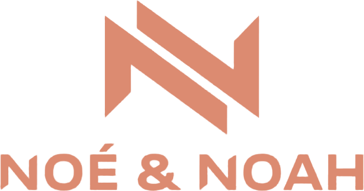

Rapport tendances lunettes
Semaine du 21 septembre 2026 · presse, actualités, boutiques et réseaux sociaux (FR + EN)
Articles analysés
1 284
+86 cette semaine
Mentions d'attributs
4 912
+312 cette semaine
Sources suivies
47
FR 21 · EN 26
Signaux forts
9
en hausse · 4 en baisse
Résumé de la semaine Généré par IA · Claude · basé sur 312 mentions
- Œil de chat : +68 % de mentions, portée par la presse FR et EN. C'est la forme la plus citée de la semaine.
- Transparent / cristal : +52 %, souvent associé aux montures oversize en acétate.
- Matières recyclées et biosourcées : +47 %, un signal en hausse continue depuis 6 semaines.
- L'écaille atteint un pic (+9 %) : toujours très présente, mais sa croissance ralentit.
- Rectangulaire fine (−38 %) et style Y2K (−41 %) reculent nettement, en volume comme dans le ton des articles.
À faire côté achats : renforcer l'œil de chat et l'oversize en acétate transparent ou écaille ; limiter les réassorts de rectangulaires fines.
Tendances de la semaine Classées par momentum sur 4 semaines · courbes : 8 dernières semaines
En baisse
Citations clés
« L'œil de chat revient en force cet automne, en acétate dense et esprit rétro. »
Vogue France · 24 sept. · FR · Œil de chat, Rétro
« Recycled acetate is no longer niche: every major label now has a line. »
Harper's Bazaar · 21 sept. · EN · Recyclé / Biosourcé, Acétate
« Adieu les petites rectangulaires façon années 2000, place au cristal. »
Madmoizelle · 20 sept. · FR · Rectangulaire (en recul), Transparent